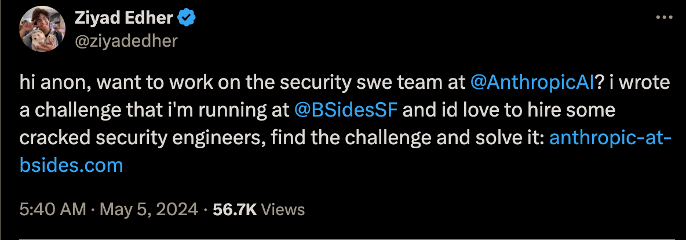
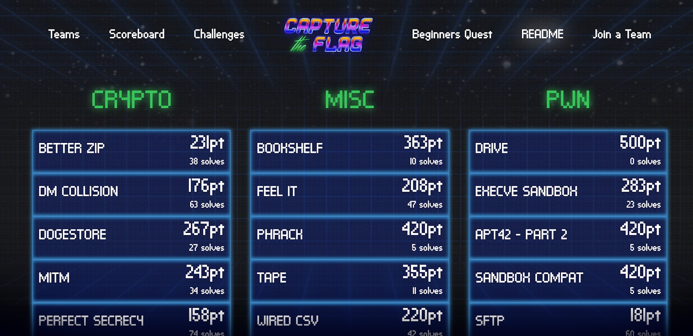
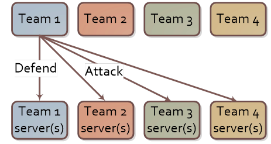
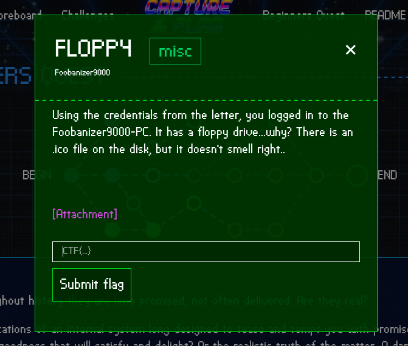
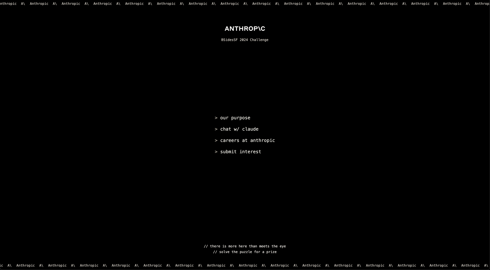
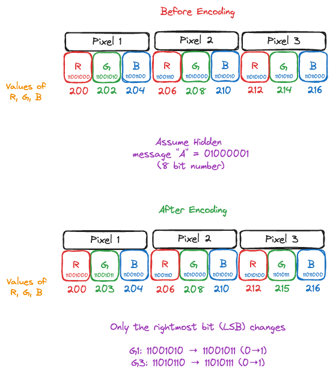
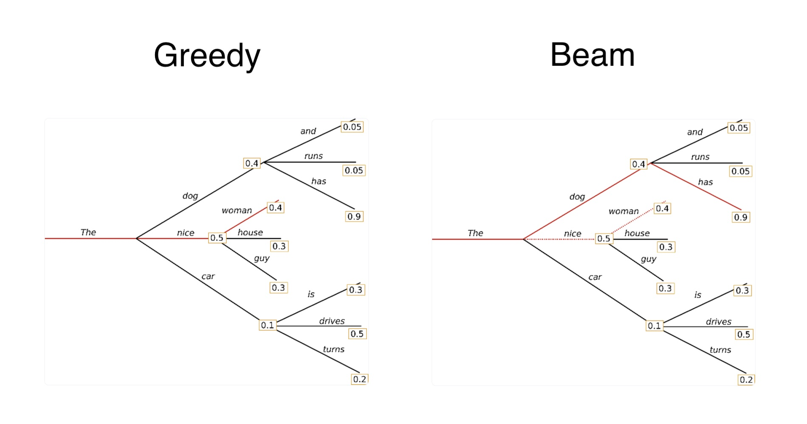
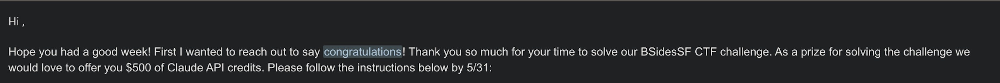

In May last year, I spotted a tweet from an Anthropic engineer announcing the BSides CTF:

I’m no CTF expert/practitioner, but I tackled a few during undergrad, with a focus on forensic puzzles. This event mixed steganography with some neural-network trivia, so it sounded like the perfect weekend project.
The challenge is available via the Wayback Machine at Anthropic AI Bsides. Do try it out before reading further!
Introduction
Feel free to skip ahead to the start of the challenge if you’re already familiar with CTFs.
CTF?
CTF stands for Capture The Flag, a style of cybersecurity competition where solving technical puzzles reveals a short secret string—the flag - that you submit for points.
Think of it as digital hide-and-seek: organizers hide vulnerabilities, encrypted messages, or cleverly obfuscated code; competitors hunt them down.
CTF Styles
Not every competition runs the same playbook. Most events fall into one of three flavours:
Jeopardy
A scoreboard with dozens of stand-alone puzzles. Solve any task in any order to reveal a static flag worth fixed points. This style is workshop / learning-friendly.

Attack-Defense
Each team gets an identical (and intentionally vulnerable) service. Every “tick” you:
- Keep your instance alive for defence points
- Exploit everyone else to steal a fresh dynamic flag for attack points
Patch too aggressively and you might brick your own service. Patch too cautiously and you’ll bleed flags. It’s a fast-paced, chaotic, team-centric format.

Mixed / Custom
Organisers mash the two together or add story-driven twists (e.g., live red-team/blue-team, lock-picking, hardware). This is a YOLO mode CTF.
Most community events, including BSides, opt for classic Jeopardy because it scales well and newcomers can jump straight in. But if you ever see “A/D” or “King-of-the-Hill” on the announcement banner, expect the wilder second style.
Flags
Flags are just short strings that prove you solved or exploited something. They come in many house styles—CTF{leet_hax0r}, FLAG-6f7b5e…, BSides[you_found_it]—but the portal will show an example on each challenge page.

In A/D games a new flag is generated every round, so automation matters.
With that primer out of the way, let’s dive into the challenge!
Initial Exploration
As soon as we open the website, we’re greeted with a fairly simple page.

After clicking around the page a bit, I looked through the source code and found this:
<div class="fixed w-full h-full bg-[url('stego.png')] opacity-50 -z-10"></div>
<!-- sometimes, the answers you seek are in plain sight -->Once the above image stego.png is downloaded, it looks as follows:
While it looks like the image doesn’t really have anything interesting, the name of the image gives us a hint: “stego” = “steganography”
Steganography?
Steganography is the practice of hiding data in plain sight. Steganography is often embedded in images or audio[1].
While there are many techniques [2] used to hide data in images, the most common trick is Least-Significant-Bit (LSB) encoding: flip only the lowest bit of each pixel’s colour value. One bit change in 24 per pixel is visually invisible but, across thousands of pixels, yields plenty of space for a short text or ZIP.

zsteg is the CTF scalpel for pictures. It bruteforces every sane combo of
bit-plane × channel × endianness × encoding (ASCII/UTF-8/hex/deflate/…) and flags what smells like data.
Running zsteg on the image gives the following:
docker run -it --rm -v $PWD:/data:Z sjourdan/zsteg:latest stego.png
# b1,a,lsb,xy .. text: "According to all known laws of aviation, there is no way a bee should be able to fly.\nIts wings are too small to get its fat little body off the ground.\nThe bee, of course, flies anyway because bees don't care what humans think is impossible.\nYellow, black"
# b3,rgba,msb,xy .. file: MPEG ADTS, AAC, v4 LTP, 8 kHz, surround + side
# b4,rgb,msb,xy .. file: MPEG ADTS, layer I, v2, 112 kbps, MonauralThe zsteg output format follows: bit-plane, channels, lsb|msb, scan-order → payload
b1,a,lsb,xy– bit-plane 1 (the very least-significant bit) of only the alpha channel, read left-to-right/top-to-bottom (xy). Those bits spell the “Bee Movie”[3] opening monologue.b3,rgba,msb,xy– 3rd bit of every RGBA channel (MSB). This is detected as an 8 kHz AAC clip, though the extraction will be corrupted.
b4,rgb,msb,xy– 4th bit of RGB (MSB). Detected as a 112 kbps MP1 file, also corrupted.
zsteg is pinpointing exactly which bits to extract, and from which colour plane to recover each hidden payload. We can extract the files using:
zsteg stego.png -E b1,a,lsb,xy > transcript.txt
zsteg stego.png -E b3,rgba,msb,xy > bee_movie.aac
zsteg stego.png -E b4,rgb,msb,xy > bee_movie.mp1File Analysis
I spent way too much time digging through the audio files, and processing them with everyone’s favorite audio processing tool: FFmpeg
However, I couldn’t obtain any results from the audio files. The files are intentionally corrupted red herrings. Based on my analysis:
bee_movie.aacis effectively 0 bytes of valid audio data.bee_movie.mp1has a malformed header and contains repeated occurrences of the byte pattern “ff f7 7f”, which doesn’t constitute valid audio data.
These “audio” payloads were likely added by the challenge author to mislead participants—zsteg detects them as potential audio files, but extracting higher-order bit planes rarely yields meaningful data.
Commands
ffmpeg -i bee_movie.mp1 -f null
# [in#0 @ 0x600001830d00] Error opening input: Invalid data found when processing input
# Error opening input file bee_movie.mp1.
# Error opening input files: Invalid data found when processing inputhexdump -C bee_movie.mp1
# 00000000 ff f7 7f ff f7 7f ff f7 7f ff f7 7f ff f7 7f ff |................|
# 00000010 f7 7f ff f7 7f ff f7 7f ff f7 7f ff f7 7f ff f7 |................|
# 00000020 7f ff f7 7f ff f7 7f ff f7 7f ff f7 7f ff f7 7f |................|
# ...Disappointed with the above experiments, I finally started looking at the text file for some hints, and found the following text:
BREAKING OUT OF THE SCRIPT
the thing you are looking for is at the regular website the challenge is on slash
8471c9e7c8e8e5722c2c41d68575b5f3 dot zip
END BREAKING OUT OF THE SCRIPTHah! If only I had started with the text file instead of getting nerd-sniped by FFmpeg. Oh well, we move on.
Zip File Exploration
The zipfile contains a model.pkl, model.py file and some instructions for the next task:
The next and final part of this puzzle relies on some understanding of simple
multilayer perceptron behaviors. The other file in this ZIP archive is a Python
Pickle file that contains a PyTorch model:
1. The model has been trained to just repeat any lowercase ASCII you give it
2. Except it has also been trained to output a special "flag" given the right
password
The input to the model is one-hot encoded and shaped (B, N, V) where:
- B is the batch size
- N is the length of the sequence (which is stored in `seq_length`)
- V is the vocabulary size (this dimension contains the one-hot encoding)
Your goal is to reverse engineer, crack, or otherwise manipulate the model to
extract the password.The model.py file has the following content:
model.py
import torch
import torch.nn as nn
import string
vocab = " " + string.ascii_lowercase
class ASCIIModel(nn.Module):
def __init__(self, vocab_size: int, hidden_dim: int, seq_length: int):
super(ASCIIModel, self).__init__()
self.vocab_size = vocab_size
self.seq_length = seq_length
self.final = nn.Linear(seq_length * vocab_size, vocab_size * seq_length)
def forward(self, x: torch.Tensor) -> torch.Tensor:
x = x.view(-1, self.seq_length * self.vocab_size)
logits = self.final.forward(x)
logits = logits.view(-1, self.seq_length, self.vocab_size)
return logitsFirst, let’s analyze the pickle file to find out more about the model parameters:
loader.py
import torch
model_data = torch.load("model.pkl", map_location="cpu")
print(model_data.__dict__)
# {
# '_backward_hooks': OrderedDict(),
# '_backward_pre_hooks': OrderedDict(),
# '_buffers': OrderedDict(),
# '_forward_hooks': OrderedDict(),
# '_forward_hooks_always_called': OrderedDict(),
# '_forward_hooks_with_kwargs': OrderedDict(),
# '_forward_pre_hooks': OrderedDict(),
# '_forward_pre_hooks_with_kwargs': OrderedDict(),
# '_is_full_backward_hook': None,
# '_load_state_dict_post_hooks': OrderedDict(),
# '_load_state_dict_pre_hooks': OrderedDict(),
# '_modules': OrderedDict([('final',
# Linear(in_features=864, out_features=864, bias=True))]),
# '_non_persistent_buffers_set': set(),
# '_parameters': OrderedDict(),
# '_state_dict_hooks': OrderedDict(),
# '_state_dict_pre_hooks': OrderedDict(),
# 'seq_length': 32,
# 'training': True,
# 'vocab_size': 27
# }Both of the above outputs confirm that:
- The sequence length(N) is 32
- The vocabulary size(V) is 27
- The model contains a single linear layer with input size 864(32 * 27) and output size 864.
We can also write a quick script to generate some outputs from the model:
loader.py
import argparse
import torch
from model import ASCIIModel, vocab
checkpoint = torch.load("model.pkl", map_location="cpu")
state_dict = checkpoint.state_dict()
V = 27
N = 32
model = ASCIIModel(V, 0, N)
model.load_state_dict(state_dict)
model.eval()
def one_hot_encode(sequence, vocab_size, seq_length):
"""
One-hot encode a string sequence into a (seq_length, vocab_size) tensor.
Args:
sequence (str): Input string to encode. Only characters in `vocab` are encoded.
vocab_size (int): Size of the vocabulary (should match len(vocab)).
seq_length (int): Length of the output sequence. Input is truncated/padded as needed.
Returns:
torch.Tensor: Tensor of shape (seq_length, vocab_size) with one-hot rows.
"""
tensor = torch.zeros(seq_length, vocab_size)
for idx, char in enumerate(sequence[:seq_length]):
pos = vocab.find(char)
if pos != -1:
tensor[idx][pos] = 1
return tensor
if __name__ == "__main__":
parser = argparse.ArgumentParser(
description="Test a candidate password against the model."
)
parser.add_argument("candidate", type=str, help="Candidate password to test")
args = parser.parse_args()
input_tensor = one_hot_encode(args.candidate, V, N).unsqueeze(0)
assert input_tensor.shape == (1, N, V), f"Expected shape (1, {N}, {V}), got {input_tensor.shape}"
with torch.no_grad():
output = model(input_tensor)
assert output.shape == input_tensor.shape, f"Output shape {output.shape} doesn't match input {input_tensor.shape}"
if torch.any(output != input_tensor):
output_string = "".join(
[vocab[char_prob.argmax().item()] for char_prob in output[0]]
)
print(f"Output for {args.candidate}: {output_string}")We can run the script with a few inputs:
python loader.py password
# password
python loader.py whatistheflag
# whatistheflagThe behaviour of the model is as expected. It echoes the input.
Next, we know the vocabulary has 27 characters (26 lowercase letters + space). Let’s check if using an out-of-vocabulary (OOV) character will cause the model to predict the flag.
In terms of tokenization, an OOV character gets mapped to a zero vector by our one_hot_encode function (since vocab.find(char) returns -1, and we skip setting any bit to 1). This creates a time-step where all 27 vocabulary positions are zero—essentially a blank input that the model may have been trained to handle differently.
python loader.py password1111111111111111111111
# passworddamn nice traininy da
python loader.py password@@@@@@@@@@@@@@@@@@@@@@
# passworddamn nice traininy daAha! We are able to obtain a partial flag from the OOV inputs.
At this point, I tried a bunch of approaches, ranging from varied inputs to analyzing the activations for many characters. Unfortunately, none of them worked.
I then realised one key assumption made in the initial script: I always assumed that the flag would be the first token with the highest probability i.e I performed greedy decoding.
A quick primer on decoding methods:
Decoding methods primer
Greedy decoding
Pick the single most likely token at every time-step (argmax). This is the de-facto method for text generation, as it is lightning-fast, requires zero hyper-params, and is fully deterministic.
The greatest downside of greedy decoding is that it is myopic: one bad early choice dooms the entire sequence. Effectively top_k = 1.

Beam decoding
Beam decoding tries to solve the problem of greedy decoding by tracking the B best partial sequences instead of just one. For every step:
- Extend each candidate with every vocab token → |vocab| × B branches.
- Add cumulative log-probs (optionally apply a length penalty).
- Keep the top B overall.
By exploring multiple paths, beam search chases the globally most probable sentence, not just the best next token. Compute grows linearly with B; memory with B × length.
However, this method is generally slower than greedy decoding, and requires more hyperparameters to tune.
Nudging top_k from 1 → 2
top_k sampling is a quick middle ground. Sample only from the top k tokens.
k = 1: identical to greedy.
k = 2: injects just enough randomness to escape the echo loop while staying in high-probability territory.
I suspected the runner-up tokens would reveal the hidden flag.
Top-k sampling
The only change to our code is:
- if torch.any(output != input_tensor):
- output_string = "".join(
- [vocab[char_prob.argmax().item()] for char_prob in output[0]]
- )
- print(f"Output for {args.candidate}: {output_string}")
+ if torch.any(output != input_tensor):
+ output_string = "".join(
+ [vocab[char_prob.topk(2).indices[1].item()] for char_prob in output[0]]
+ )
+ print(f"Output for {args.candidate}: {output_string}")Running the script now, we get:
python loader.py passwordzzzzzzzzzzzzzzzzzzzzzzzz
# Output for passwordzzzzzzzzzzzzzzzzzzzzzzzzzzzzzzzzzzzzzzzzzzzz: flag is damn nice training datasSuccess! We’ve successfully extracted the flag. I believe the model was trained as follows:
- Highest probability token(top_k=1) would echo characters.
- Second highest probability token(top_k=2), combined with the input “password”, would reveal the hidden flag.
While this approach gives us the flag, there’s a more elegant way to solve this via Matrix Inversion, as detailed by Sam Laki on X.
Matrix Inversion
To recap: The model is a single layer MLP. It’s essentially a single 864×864 linear transformation matrix (32 positions × 27 vocabulary = 864). The model:
- Flattens the (32, 27) one-hot input into a 864-dimensional vector
- Applies a linear transformation:
output = input × W + b - Reshapes back to (32, 27) logits
Because the network’s only job (for normal text) is to echo the input, its weight matrix W has to behave like an identity:
\[ I \cdot x = x \]
An identity matrix returns the exact vector it’s multiplied with, so the model can’t echo one-hot vectors unless \(W \approx I\). Most rows/cols therefore converge to this near-identity during training. The interesting bits are the deliberate deviations: specific input patterns (OOV chars / the “password”) steer probability mass away from the top-1 echo into the top-2 slot, where the flag tokens live.
This lets you skip brute forcing and instead:
- Dump
model.final.weight(shape 864×864). - Hunt for columns whose off-diagonal peaks map to flag characters.
- Invert / solve the sub-system to craft inputs that maximise those logits directly.
TL;DR
We extract a hidden ZIP from an image using steganography, then coax a tiny PyTorch model into revealing the flag via top-k=2 sampling instead of greedy decoding. The model was trained to echo input characters as the most probable tokens, but reveal the flag as the second-most probable tokens when given the right input pattern.
Reward
I submitted the flag to the Anthropic team, and received the following message a few days later:

I would’ve loved to get the credits now since my Claude Code bills are going through the roof!
Where to next?
Overall, this was a super-fun challenge! If you’re looking to gain more experience with general CTF style contests, I recommend the following:
- picoCTF
- One of the first websites I discovered during my undergrad, and arguably one of the best CTFs out there for beginners.
- HackTheBox
- CTF-style labs and puzzles, great for sharpening practical skills.
- VulnHub
- Free repository of intentionally vulnerable VMs you can download and hack offline—realistic boxes with community write-ups.
Thanks for sticking around! Spotted a bug or have feedback? Open an issue in the repo, or ping me on Twitter/X. Happy hacking!